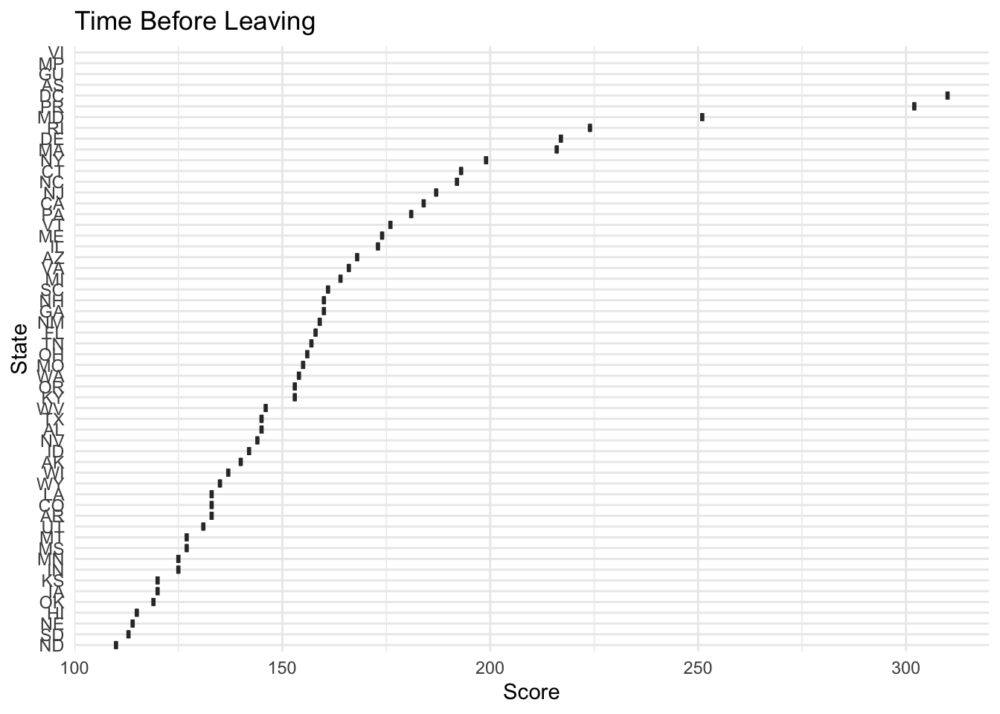
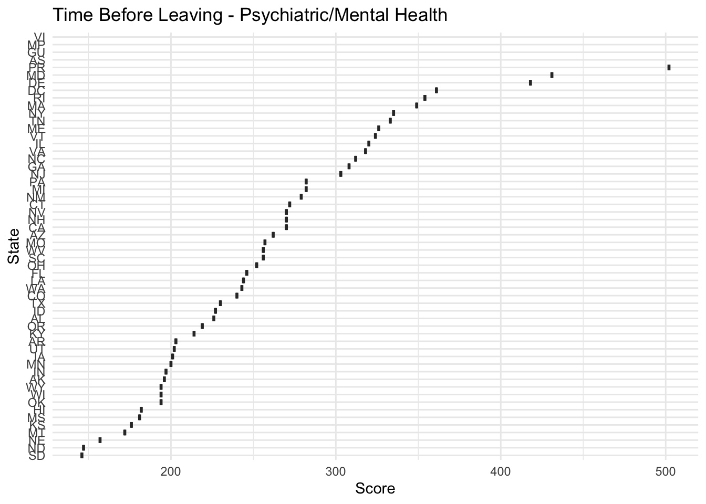
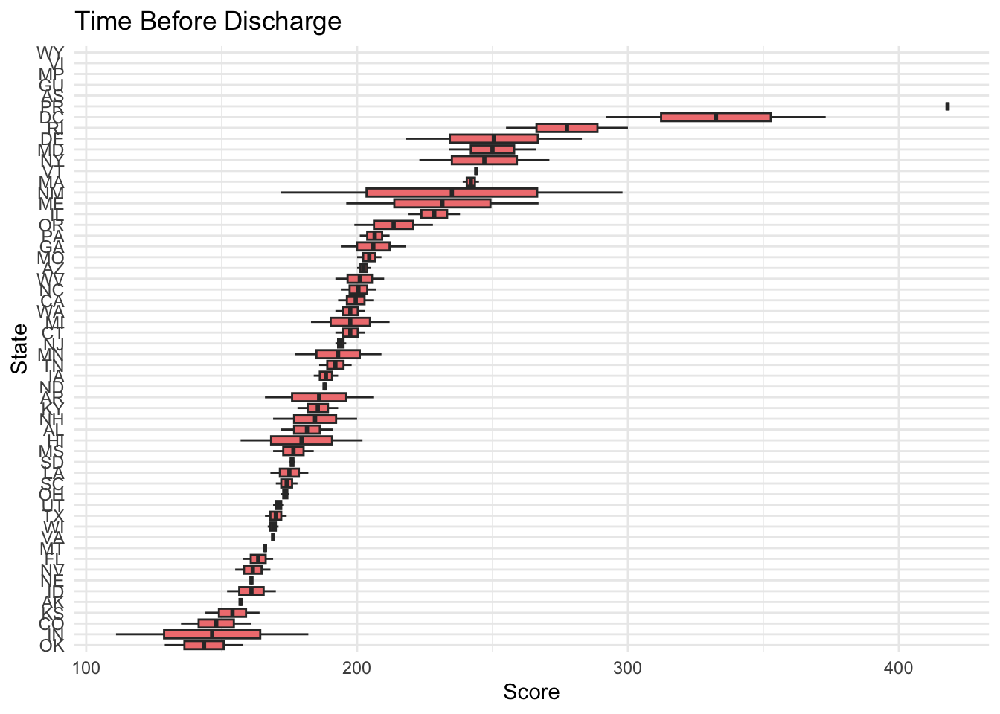

# Load necessary packages# Setting a specific CRAN mirror (e.g., RStudio's CRAN mirror)options(repos =c(CRAN ="https://cloud.r-project.org"))install.packages("viridis")
The downloaded binary packages are in
/var/folders/29/tsfhn2w952x9r8f27_hpzq900000gn/T//RtmpMCbvYs/downloaded_packages
library(tidyverse)
── Attaching core tidyverse packages ──────────────────────── tidyverse 2.0.0 ──
✔ dplyr 1.1.4 ✔ readr 2.1.5
✔ forcats 1.0.0 ✔ stringr 1.5.1
✔ ggplot2 3.5.2 ✔ tibble 3.2.1
✔ lubridate 1.9.4 ✔ tidyr 1.3.1
✔ purrr 1.0.4
── Conflicts ────────────────────────────────────────── tidyverse_conflicts() ──
✖ dplyr::filter() masks stats::filter()
✖ dplyr::lag() masks stats::lag()
ℹ Use the conflicted package (<http://conflicted.r-lib.org/>) to force all conflicts to become errors
library(ggplot2)library(skimr)install.packages("here") # Only if it's not already installed
The downloaded binary packages are in
/var/folders/29/tsfhn2w952x9r8f27_hpzq900000gn/T//RtmpMCbvYs/downloaded_packages
library(here)
here() starts at /Users/hopegrismercomputer/Desktop/MADA-course/hopegrismer-MADA-portfolio
# Load the CSV file using a project-rooted pathcare_state <- readr::read_csv(here::here("tidytuesday-exercise", "data", "care_state.csv"))
Rows: 1232 Columns: 8
── Column specification ────────────────────────────────────────────────────────
Delimiter: ","
chr (5): state, condition, measure_id, measure_name, footnote
dbl (1): score
date (2): start_date, end_date
ℹ Use `spec()` to retrieve the full column specification for this data.
ℹ Specify the column types or set `show_col_types = FALSE` to quiet this message.
# A tibble: 6 × 8
state condition measure_id measure_name score footnote start_date end_date
<chr> <chr> <chr> <chr> <dbl> <chr> <date> <date>
1 AK Healthcare… HCP_COVID… Percentage … 7.3 <NA> 2024-01-01 2024-03-31
2 AK Healthcare… IMM_3 Healthcare … 80 <NA> 2023-10-01 2024-03-31
3 AK Emergency … OP_18b Average (me… 140 25, 26 2023-04-01 2024-03-31
4 AK Emergency … OP_18b_HI… Average tim… 157 25, 26 2023-04-01 2024-03-31
5 AK Emergency … OP_18b_LO… Average tim… 136 25, 26 2023-04-01 2024-03-31
6 AK Emergency … OP_18b_ME… Average tim… 136 25, 26 2023-04-01 2024-03-31
Here is the codebook for what the different variables in the table mean:
care_state.csv
variable
class
description
state
character
The two-letter code for the state (or territory, etc) where the hospital is located.
condition
character
The condition for which the patient was admitted. Six categories of conditions are included in the data.
measure_id
character
The ID of the thing being measured. Note that there are 22 unique IDs but only 21 unique names.
measure_name
character
The name of the thing being measured. Note that there are 22 unique IDs but only 21 unique names.
score
double
The score of the measure.
footnote
character
Footnotes that apply to this measure: 5 = “Results are not available for this reporting period.”, 25 = “State and national averages include Veterans Health Administration (VHA) hospital data.”, 26 = “State and national averages include Department of Defense (DoD) hospital data.”.
start_date
date
The date on which measurement began for this measure.
end_date
date
The date on which measurement ended for this measure.
Questions in Mind Based on Suggestions on GitHub
Is there a connection between state populations and wait times?
Which conditions have the longest wait times? The shortest?
Exploratory Data Analysis
What was done & why:
I noticed that the measures in the measure_name column were all very different. Without creating subsets of the data, you would be comparing unlabeled scores that are not measuring the same thing. In this data set especially, this would be very adverse as some of the scores are ideally higher and some ideally are lower.
I subsetted the data as a result in measures I was curious about.
library(dplyr)#Subsetting#Average (median) time patients spent in the emergency department before leaving from the visit A lower number of minutes is better"time_b4_leaving <- care_state %>%filter(measure_name =="Average (median) time patients spent in the emergency department before leaving from the visit A lower number of minutes is better")#Average (median) time patients spent in the emergency department before leaving from the visit- Psychiatric/Mental Health Patients. A lower number of minutes is better"time_b4_leaving_psych <- care_state %>%filter(measure_name =="Average (median) time patients spent in the emergency department before leaving from the visit- Psychiatric/Mental Health Patients. A lower number of minutes is better")#Average time patients spent in the emergency department before being sent home A lower number of minutes is better (high)"time_b4_discharge <- care_state %>%filter(measure_name =="Average time patients spent in the emergency department before being sent home A lower number of minutes is better (high)")# Check the first few rows of each subset to verifyhead(time_b4_leaving)
# A tibble: 6 × 8
state condition measure_id measure_name score footnote start_date end_date
<chr> <chr> <chr> <chr> <dbl> <chr> <date> <date>
1 AK Emergency … OP_18b Average (me… 140 25, 26 2023-04-01 2024-03-31
2 AL Emergency … OP_18b Average (me… 145 25, 26 2023-04-01 2024-03-31
3 AR Emergency … OP_18b Average (me… 133 25, 26 2023-04-01 2024-03-31
4 AS Emergency … OP_18b Average (me… NA 5 2023-04-01 2024-03-31
5 AZ Emergency … OP_18b Average (me… 168 25, 26 2023-04-01 2024-03-31
6 CA Emergency … OP_18b Average (me… 184 25, 26 2023-04-01 2024-03-31
head(time_b4_leaving_psych)
# A tibble: 6 × 8
state condition measure_id measure_name score footnote start_date end_date
<chr> <chr> <chr> <chr> <dbl> <chr> <date> <date>
1 AK Emergency … OP_18c Average (me… 196 25 2023-04-01 2024-03-31
2 AL Emergency … OP_18c Average (me… 226 25 2023-04-01 2024-03-31
3 AR Emergency … OP_18c Average (me… 203 25 2023-04-01 2024-03-31
4 AS Emergency … OP_18c Average (me… NA 5 2023-04-01 2024-03-31
5 AZ Emergency … OP_18c Average (me… 262 25 2023-04-01 2024-03-31
6 CA Emergency … OP_18c Average (me… 270 25 2023-04-01 2024-03-31
head(time_b4_discharge)
# A tibble: 6 × 8
state condition measure_id measure_name score footnote start_date end_date
<chr> <chr> <chr> <chr> <dbl> <chr> <date> <date>
1 AK Emergency … OP_18b_HI… Average tim… 157 25, 26 2023-04-01 2024-03-31
2 AK Emergency … OP_18b_VE… Average tim… NA 25, 26 2023-04-01 2024-03-31
3 AL Emergency … OP_18b_HI… Average tim… 172 25, 26 2023-04-01 2024-03-31
4 AL Emergency … OP_18b_VE… Average tim… 191 25, 26 2023-04-01 2024-03-31
5 AR Emergency … OP_18b_HI… Average tim… 166 25, 26 2023-04-01 2024-03-31
6 AR Emergency … OP_18b_VE… Average tim… 206 25, 26 2023-04-01 2024-03-31
Perfect. Now I wanted to save these sets to further my EDA.
library(readr)# Save Subset 1write_csv(time_b4_leaving, here::here("tidytuesday-exercise", "data", "time_b4_leaving_care_state.csv"))# Save Subset 2write_csv(time_b4_leaving_psych, here::here("tidytuesday-exercise", "data", "time_b4_leaving_psych_care_state.csv"))# Save Subset 3write_csv(time_b4_discharge, here::here("tidytuesday-exercise", "data", "time_b4_discharge.csv"))
Time to take a look at this subsets but in the context of states as well.
library(ggplot2)# Subset 1: "time_b4_leaving"ggplot(time_b4_leaving, aes(x =reorder(state, score, FUN = median, na.rm =TRUE), y = score)) +geom_boxplot(fill ="lightblue") +labs(title ="Score Distribution by State - Time Before Leaving", x ="State", y ="Score") +theme_minimal() +coord_flip()
Warning: Removed 4 rows containing non-finite outside the scale range
(`stat_boxplot()`).

# Subset 2: "time_b4_leaving_psych"ggplot(time_b4_leaving_psych, aes(x =reorder(state, score, FUN = median, na.rm =TRUE), y = score)) +geom_boxplot(fill ="lightgreen") +labs(title ="Score Distribution by State - Psychiatric/Mental Health Patients", x ="State", y ="Score") +theme_minimal() +coord_flip()
Warning: Removed 4 rows containing non-finite outside the scale range
(`stat_boxplot()`).

# Subset 3: "time_b4_discharge"ggplot(time_b4_discharge, aes(x =reorder(state, score, FUN = median, na.rm =TRUE), y = score)) +geom_boxplot(fill ="lightcoral") +labs(title ="Score Distribution by State - Time Before Discharge", x ="State", y ="Score") +theme_minimal() +coord_flip()
Warning: Removed 16 rows containing non-finite outside the scale range
(`stat_boxplot()`).

Very smushed, let’s try again.
# Subset 1: "time_b4_leaving"ggplot(time_b4_leaving, aes(x =reorder(state, score, FUN = median, na.rm =TRUE), y = score)) +geom_boxplot(fill ="lightblue") +labs(title ="Time Before Leaving", x ="State", y ="Time (Minutes)") +theme_minimal() +coord_flip() +theme(axis.text.y =element_text(size =6), # Decrease font size furtherplot.margin =margin(1, 1, 1, 1, "cm")) # Adjust margins for more space
Warning: Removed 4 rows containing non-finite outside the scale range
(`stat_boxplot()`).
# Subset 2: "time_b4_leaving_psych"ggplot(time_b4_leaving_psych, aes(x =reorder(state, score, FUN = median, na.rm =TRUE), y = score)) +geom_boxplot(fill ="lightgreen") +labs(title ="Time Before Leaving - Psychiatric/Mental Health Patients", x ="State", y ="Time (Minutes)") +theme_minimal() +coord_flip() +theme(axis.text.y =element_text(size =6), # Decrease font size furtherplot.margin =margin(1, 1, 1, 1, "cm")) # Adjust margins for more space
Warning: Removed 4 rows containing non-finite outside the scale range
(`stat_boxplot()`).
# Subset 3: "time_b4_discharge"ggplot(time_b4_discharge, aes(x =reorder(state, score, FUN = median, na.rm =TRUE), y = score)) +geom_boxplot(fill ="lightcoral") +labs(title ="Time Before Discharge", x ="State", y ="Time (Minutes)") +theme_minimal() +coord_flip() +theme(axis.text.y =element_text(size =6), # Decrease font size furtherplot.margin =margin(1, 1, 1, 1, "cm")) # Adjust margins for more space
Warning: Removed 16 rows containing non-finite outside the scale range
(`stat_boxplot()`).
The state variation is glaring in whole with some states being firmly in the 100 minutes and some states being up into the 300 minute range (not good). The time before discharge graphic also showed not only large interstate differences but also large intrastate differences. For example, NM (New Mexico) had a glaringly large range. The same is true with IN, DC, ME, DE. Curious to know if these states range most highly in SES disparity or insurance coverage??
library(dplyr)library(knitr)# Calculate the range for each state in the time_b4_discharge datasetrange_data <- time_b4_discharge %>%group_by(state) %>%summarise(min_time =min(score, na.rm =TRUE), # Minimum timemax_time =max(score, na.rm =TRUE), # Maximum timerange = max_time - min_time # Range (difference between max and min) )
Warning: There were 10 warnings in `summarise()`.
The first warning was:
ℹ In argument: `min_time = min(score, na.rm = TRUE)`.
ℹ In group 4: `state = "AS"`.
Caused by warning in `min()`:
! no non-missing arguments to min; returning Inf
ℹ Run `dplyr::last_dplyr_warnings()` to see the 9 remaining warnings.
# Sort the data by range to find the largest and smallest rangesrange_data_sorted <- range_data %>%arrange(desc(range)) # Sort by range in descending order# Get the top 5 largest ranges and smallest rangeslargest_ranges <-head(range_data_sorted, 5)smallest_ranges <-tail(range_data_sorted, 5)# Combine both tables (largest and smallest ranges)range_table <-bind_rows(mutate(largest_ranges, Range_Type ="Largest"),mutate(smallest_ranges, Range_Type ="Smallest"))# Show the tablerange_table %>%select(Range_Type, state, min_time, max_time, range) %>%kable() # Use knitr::kable() to display the table neatly
Range_Type
state
min_time
max_time
range
Largest
NM
172
298
126
Largest
DC
292
373
81
Largest
IN
111
182
71
Largest
ME
196
267
71
Largest
DE
218
283
65
Smallest
AS
Inf
-Inf
-Inf
Smallest
GU
Inf
-Inf
-Inf
Smallest
MP
Inf
-Inf
-Inf
Smallest
VI
Inf
-Inf
-Inf
Smallest
WY
Inf
-Inf
-Inf
This table was helpful to print out the largest range states that we saw in the graph. But I included another iteration of this table because I saw that some missing data created negative values (-Inf). This meant that the smallest range ones in the table did not necessary show the smallest ranges in discharge time but just negative calculation.
library(dplyr)library(knitr)# Calculate the range for each state and exclude problem rowsrange_data <- time_b4_discharge %>%group_by(state) %>%summarise(min_time =min(score, na.rm =TRUE),max_time =max(score, na.rm =TRUE),range = max_time - min_time ) %>%filter(is.finite(range), !is.na(range), range >0)
Warning: There were 10 warnings in `summarise()`.
The first warning was:
ℹ In argument: `min_time = min(score, na.rm = TRUE)`.
ℹ In group 4: `state = "AS"`.
Caused by warning in `min()`:
! no non-missing arguments to min; returning Inf
ℹ Run `dplyr::last_dplyr_warnings()` to see the 9 remaining warnings.
# Get top 5 largest and smallest rangeslargest_ranges <- range_data %>%arrange(desc(range)) %>%slice_head(n =5)smallest_ranges <- range_data %>%arrange(range) %>%slice_head(n =5)# Combine and labelrange_table <-bind_rows(mutate(largest_ranges, Range_Type ="Largest"),mutate(smallest_ranges, Range_Type ="Smallest"))# Display the tablerange_table %>%select(Range_Type, state, min_time, max_time, range) %>%kable()
Range_Type
state
min_time
max_time
range
Largest
NM
172
298
126
Largest
DC
292
373
81
Largest
IN
111
182
71
Largest
ME
196
267
71
Largest
DE
218
283
65
Smallest
SD
175
177
2
Smallest
OH
172
175
3
Smallest
NJ
192
196
4
Smallest
UT
169
173
4
Smallest
WI
167
171
4
So, next, I thought it would be neat to try it out on a map.
install.packages("sf")
The downloaded binary packages are in
/var/folders/29/tsfhn2w952x9r8f27_hpzq900000gn/T//RtmpMCbvYs/downloaded_packages
install.packages("ggplot2")
The downloaded binary packages are in
/var/folders/29/tsfhn2w952x9r8f27_hpzq900000gn/T//RtmpMCbvYs/downloaded_packages
install.packages("dplyr")
The downloaded binary packages are in
/var/folders/29/tsfhn2w952x9r8f27_hpzq900000gn/T//RtmpMCbvYs/downloaded_packages
install.packages("viridis") # For color gradients
The downloaded binary packages are in
/var/folders/29/tsfhn2w952x9r8f27_hpzq900000gn/T//RtmpMCbvYs/downloaded_packages
library(sf)
Linking to GEOS 3.13.0, GDAL 3.8.5, PROJ 9.5.1; sf_use_s2() is TRUE
library(ggplot2)library(dplyr)library(viridis)
Loading required package: viridisLite
# Load the shapefile for US statesus_states <- sf::st_read(here("tidytuesday-exercise", "US_state.shp"))
Reading layer `US_State' from data source
`/Users/hopegrismercomputer/Desktop/MADA-course/hopegrismer-MADA-portfolio/tidytuesday-exercise/US_State.shp'
using driver `ESRI Shapefile'
Simple feature collection with 56 features and 9 fields
Geometry type: MULTIPOLYGON
Dimension: XY
Bounding box: xmin: -179.1489 ymin: -14.5487 xmax: 179.7785 ymax: 71.36516
Geodetic CRS: NAD83
# Your data with state codes and time values (already subsetted)# For example, assuming 'time_b4_leaving' has 'state' (2-letter codes) and 'score' (time values)# Ensure your state codes match the shapefile state codes, if needed (they should be the same 2-letter state codes)# Merge your data with the shapefile based on the state codesmerged_data <- us_states %>%left_join(time_b4_leaving, by =c("STUSPS"="state"))# Plot the data on the map using a gradient based on time (score)time_b4_leavingplot =ggplot(merged_data) +geom_sf(aes(fill = score), color ="white") +# Color the states based on 'score' (time)scale_fill_viridis(name ="Average Time (min)", option ="C", direction =-1) +# Choose a gradient color scaletheme_minimal() +labs(title ="Hotspots of Time Before Leaving",subtitle ="Average Time Spent in the ED" ) +theme(axis.text =element_blank(), # Remove axis textaxis.ticks =element_blank(), # Remove axis tickspanel.grid =element_blank(), # Remove grid linesplot.title =element_text(size =16, face ="bold"), # Adjust title sizeplot.subtitle =element_text(size =12), # Adjust subtitle sizelegend.title =element_text(size =12), # Adjust legend title sizelegend.text =element_text(size =10) # Adjust legend text size ) +coord_sf(datum =NA) # Remove axis to ensure the map is nicely centeredtime_b4_leavingplot
# Save the plot as a PNG file in the 'tidytuesday-exercise' folderggsave(here("tidytuesday-exercise", "leaving__time_map.png"), plot = time_b4_leavingplot, width =10, height =8)
# Load necessary packagesinstall.packages("sf")
The downloaded binary packages are in
/var/folders/29/tsfhn2w952x9r8f27_hpzq900000gn/T//RtmpMCbvYs/downloaded_packages
install.packages("ggplot2")
The downloaded binary packages are in
/var/folders/29/tsfhn2w952x9r8f27_hpzq900000gn/T//RtmpMCbvYs/downloaded_packages
install.packages("dplyr")
The downloaded binary packages are in
/var/folders/29/tsfhn2w952x9r8f27_hpzq900000gn/T//RtmpMCbvYs/downloaded_packages
install.packages("viridis")
The downloaded binary packages are in
/var/folders/29/tsfhn2w952x9r8f27_hpzq900000gn/T//RtmpMCbvYs/downloaded_packages
library(sf)library(ggplot2)library(dplyr)library(viridis)library(here)# Load the shapefile for US statesus_states <- sf::st_read(here("tidytuesday-exercise", "US_state.shp"))
Reading layer `US_State' from data source
`/Users/hopegrismercomputer/Desktop/MADA-course/hopegrismer-MADA-portfolio/tidytuesday-exercise/US_State.shp'
using driver `ESRI Shapefile'
Simple feature collection with 56 features and 9 fields
Geometry type: MULTIPOLYGON
Dimension: XY
Bounding box: xmin: -179.1489 ymin: -14.5487 xmax: 179.7785 ymax: 71.36516
Geodetic CRS: NAD83
# Merge your 'time_b4_discharge' data with the shapefile based on the state codes (assuming 'state' in 'time_b4_discharge' corresponds to 'STUSPS' in the shapefile)merged_data_discharge <- us_states %>%left_join(time_b4_discharge, by =c("STUSPS"="state"))# Plot the data on the map using a gradient based on time (score)time_b4_dischargeplot =ggplot(merged_data_discharge) +geom_sf(aes(fill = score), color ="white") +# Color the states based on 'score' (time)scale_fill_viridis(name ="Average Time (min)", option ="C", direction =-1) +# Choose a gradient color scaletheme_minimal() +labs(title ="Hotspots of Time Before Discharge",subtitle ="Average Time Spent in the ED Before Discharge" ) +theme(axis.text =element_blank(), # Remove axis textaxis.ticks =element_blank(), # Remove axis tickspanel.grid =element_blank(), # Remove grid linesplot.title =element_text(size =16, face ="bold"), # Adjust title sizeplot.subtitle =element_text(size =12), # Adjust subtitle sizelegend.title =element_text(size =12), # Adjust legend title sizelegend.text =element_text(size =10) # Adjust legend text size ) +coord_sf(datum =NA) # Remove axis to ensure the map is nicely centeredtime_b4_dischargeplot
# Save the plot as a PNG file in the 'tidytuesday-exercise' folderggsave(here("tidytuesday-exercise", "discharge_time_map.png"), plot = time_b4_dischargeplot, width =10, height =8)
To do some modeling for my question on whether income inequality is directly the reason for the variablity in ranges between states, I found some Gini Index data to compare to my Time to Discharge Data.
The downloaded binary packages are in
/var/folders/29/tsfhn2w952x9r8f27_hpzq900000gn/T//RtmpMCbvYs/downloaded_packages
library(readr)# Load the Gini index datagini_data <-read_csv(here::here("tidytuesday-exercise", "data", "gini-index-data.csv"))
Rows: 1 Columns: 105
── Column specification ────────────────────────────────────────────────────────
Delimiter: ","
chr (53): Label (Grouping), Alabama!!Margin of Error, Alaska!!Margin of Erro...
dbl (52): Alabama!!Estimate, Alaska!!Estimate, Arizona!!Estimate, Arkansas!!...
ℹ Use `spec()` to retrieve the full column specification for this data.
ℹ Specify the column types or set `show_col_types = FALSE` to quiet this message.
# Check the data structurehead(gini_data)
# A tibble: 1 × 105
`Label (Grouping)` `Alabama!!Estimate` `Alabama!!Margin of Error`
<chr> <dbl> <chr>
1 Gini Index 0.477 ±0.0058
# ℹ 102 more variables: `Alaska!!Estimate` <dbl>,
# `Alaska!!Margin of Error` <chr>, `Arizona!!Estimate` <dbl>,
# `Arizona!!Margin of Error` <chr>, `Arkansas!!Estimate` <dbl>,
# `Arkansas!!Margin of Error` <chr>, `California!!Estimate` <dbl>,
# `California!!Margin of Error` <chr>, `Colorado!!Estimate` <dbl>,
# `Colorado!!Margin of Error` <chr>, `Connecticut!!Estimate` <dbl>,
# `Connecticut!!Margin of Error` <chr>, `Delaware!!Estimate` <dbl>, …
# Extracting the "Estimate" columns for all states (e.g., "Arizona!!Estimate")gini_estimates_all <- gini_data %>%select(contains("!!Estimate")) # Dynamically selecting all columns that include '!!Estimate'# View all estimates for all statesprint(gini_estimates_all)
So now I have my Gini Index data where I want it with my Estimates of 2023 Gini Index as a proxy for income inequality and I want to merge it with my range data I had before for each state.
# Load the tidyr packagelibrary(tidyr)# Convert the Gini estimates data to long formatgini_long <- gini_estimates_all %>%pivot_longer(cols =everything(), names_to ="state", values_to ="gini_estimate" ) %>%# Remove 'Estimate' from the state name for claritymutate(state =gsub("!!Estimate", "", state))# Preview the transformed datahead(gini_long)
# A tibble: 6 × 2
state gini_estimate
<chr> <dbl>
1 Alabama 0.477
2 Alaska 0.449
3 Arizona 0.465
4 Arkansas 0.474
5 California 0.487
6 Colorado 0.458
# Merge the Gini estimates with the range datamerged_data <- range_data %>%left_join(gini_long, by ="state")# Preview the merged datahead(merged_data)
# A tibble: 6 × 5
state min_time max_time range gini_estimate
<chr> <dbl> <dbl> <dbl> <dbl>
1 AL 172 191 19 NA
2 AR 166 206 40 NA
3 AZ 200 205 5 NA
4 CA 193 206 13 NA
5 CO 135 161 26 NA
6 CT 192 203 11 NA
Source: Data Science Learning Community (2024). Tidy Tuesday: A weekly social data project. https://tidytues.day
citation("tidytuesdayR")
To cite package 'tidytuesdayR' in publications use:
Harmon J, Hughes E (2024). _tidytuesdayR: Access the Weekly
'TidyTuesday' Project Dataset_. R package version 1.1.2,
<https://CRAN.R-project.org/package=tidytuesdayR>.
A BibTeX entry for LaTeX users is
@Manual{,
title = {tidytuesdayR: Access the Weekly 'TidyTuesday' Project Dataset},
author = {Jon Harmon and Ellis Hughes},
year = {2024},
note = {R package version 1.1.2},
url = {https://CRAN.R-project.org/package=tidytuesdayR},
}